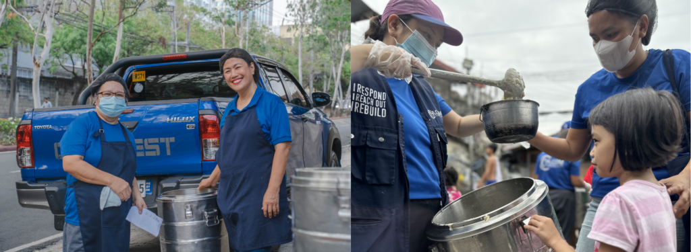

NLCOM
The food projects of New Life Community Care (NLCOM) focus on providing accessible and nutritious meals to individuals and families experiencing food insecurity, particularly those affected by disasters and difficult living conditions. Through its mobile kitchen operations, community feeding programs, and food relief distributions, the organization extends assistance to vulnerable communities by preparing hot meals, distributing essential food supplies, and conducting recurring feeding activities.